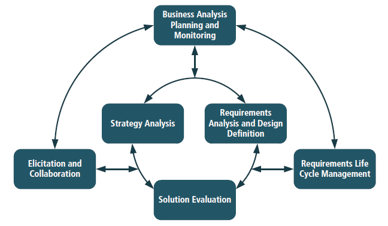
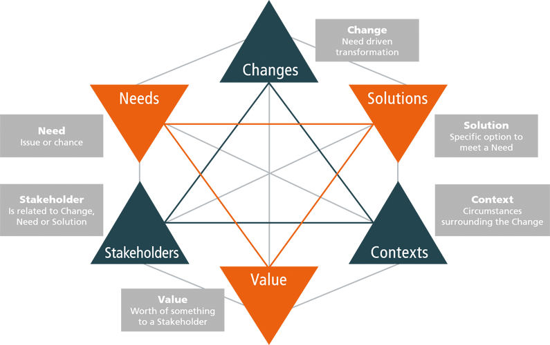
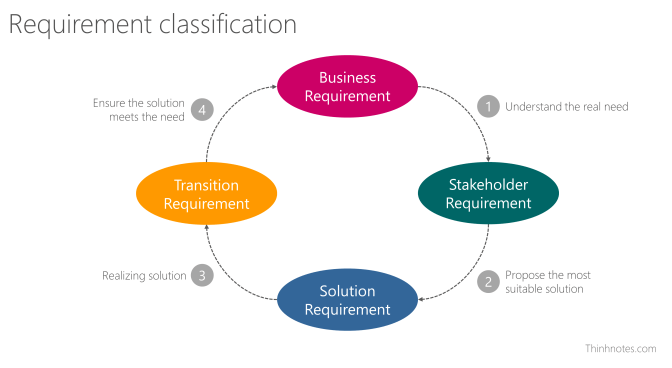
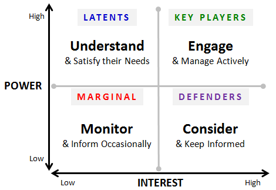
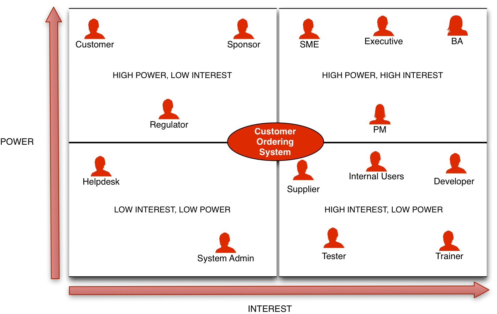
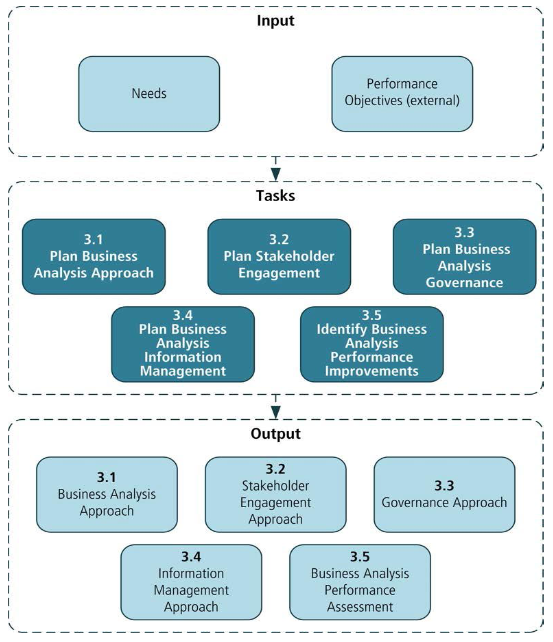
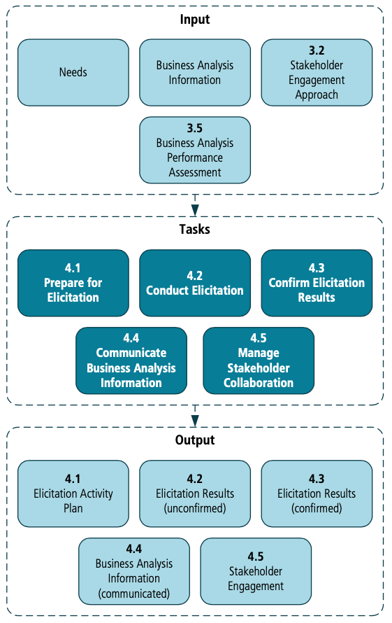

Chủ đề này đã muốn viết từ lâu. Thực sự là sau khi đọc qua cuốn
A Guide to the Business Analysis Body of Knowledge (version 3)
aka BABOK v3, mình cũng muốn viết liền ngay và luôn. Tuy
nhiên, một thời gian sau đó mình bận giải quyết một số dự án và cảm thấy có
một số chỗ cần làm rõ nên để đó. Và bây giờ, cũng nên viết một chút gì về nó
để sau này xem lại sự thay đổi trong cách suy nghĩ của bản thân.
Trước đây, mình cũng đã viết một bài tóm tắt về việc
"Quản lý và Phân tích Yêu cầu" tại
đây. Tuy nhiên, nó có mang nặng hình thức lý thuyết và khá là tư duy của con
nít. Mình sẽ ráng chia sẻ suy nghĩ nhiều hơn là tóm tắt lại cuốn BABOK.
Viết ra không phải là việc khó; cái khó là phải có những câu chuyện gì
đáng kể để kể, những tư tưởng gì đáng ghi để ghi.
Giới thiệu về cuốn BABOK
A Guide to the Business Analysis Body of Knowledge
hay còn được biết đến với cái tên ngắn gọn là BABOK là
quyển kinh thánh dành cho Business Analyst. Cuốn sách này do tổ chức
International Institute of Business Analysis (IIBA)
phát hành. IIBA tổ chức các kỳ thi và cung cấp các chứng chỉ trong lĩnh vực
BA dựa trên cuốn BABOK và số năm kinh nghiệm BA của các thành viên. Phiên
bản hiện tại của BABOK đang là version 3, được phát hành vào 04/2015. Các
bạn có thể tìm hiểu thêm tại:
Đại khái, BABOK mô tả các lĩnh vực kiến thức phân tích yêu cầu, nhiệm vụ,
năng lực cơ bản, kỹ thuật và quan điểm về cách tiếp cận.
Sách hay phải chăng là sách mà tác giả biết hạn chế vấn đề, biết tiết
kiệm lời nói. Trái lại, quyển sách dở là quyển sách mà trong đó tác giả
đã không còn để thiếu sót cái gì cả, không để cho độc giả cùng bàn góp
thêm được phần nào ý kiến của mình.
Tổng quan
Business Analysis
Là VIỆC giải quyết các bài toán của doanh nghiệp đang gặp
phải dựa vào yêu cầu đầu vào giữa các bên liên quan và giải pháp được đưa ra
nhằm giải quyết các vấn đề đang gặp phải. Có thể là các giải pháp quy trình
hoặc kỹ thuật mà giải pháp hiện tại đang sử dụng không đạt hiệu quả.
Hay ta nói một cách khác:
Xác định nhu cầu và đề xuất giải pháp. Dựa trên:
Nhu cầu và lý do cần phải thay đổi
Thiết kế và mô tả các giải pháp đem lại giá trị
Phạm vi trong một dự án hoặc trong suốt
quá trình phát triển doanh nghiệp và
cải tiến liên tục
Mục tiêu để hiểu trạng thái hiện tại để xác định trạng thái trong tương
lai để đưa ra những hoạt động cần thiết để chuyển từ trạng thái hiện tại
hay trạng thái tương lai
Business Analyst
Còn người thực hiện Business Analysis sẽ có tên là
Business Analyst. Họ là:
Người có trách nhiệm khám phá,
tổng hợp và phân tích thông tin từ
nhiều nguồn như doanh nghiệp, công cụ, quy trình, tài liệu và các bên
liên quan.
Người có trách nhiệm
khơi gợi các nhu cầu thực tế của các bên liên quan.
Thường là làm rõ mong muốn của các bên liên quan để xác định các vấn đề
và nguyên nhân cơ bản.
Người đóng vai trò thiết kế và
chuyển giao các giải pháp với nhu cầu thực sự của các
bên liên quan. Các hoạt động bao gồm:
Thấu hiểu vấn đề của doanh nghiệp và mục tiêu
Phân tích nhu cầu và giải pháp
Đề xuất chiến lược
Điều hướng sự thay đổi
Tạo điều kiện cho các bên liên quan hợp tác với nhau
Họ sẽ cần nhóm kiến thức và chúng sẽ bổ trợ nhau. Bạn có thể tìm hiểu kỹ từ
chapter 3 đến chapter 8 trong cuốn BABOK.
Business Analysis Planning and Monitoring(Kế hoạch Phân tích Nghiệp vụ và Giám sát)
Eliciation and Collaboration(Khơi gợi và Hợp tác để lấy được thông tin)
Requirements Life Cycle Management(Quản lý vòng đời của yêu cầu)
Strategy Analysis(Hiểu về chiến lược của khách hàng)
Requirement Analysis and Design Definition (RADD)(Phân tích và thiết kế)
Solution Evaluation(Đánh giá giải pháp)

Khái niệm
Business Analysis Core Concept Model (BACCM)
BACCM là một framework dành cho phân tích nghiệp vụ. Gồm có 6 khái
niệm cốt lõi. Trong đó, mỗi khái niệm cốt lõi được xác định bởi 5 khái niệm
còn lại, không thể hiểu đầy đủ cho đến khi tất cả các khái niệm được hiểu.
Change (sự thay đổi)
Các hoạt động chuyển đổi để đáp ứng yêu cầu
Need (nhu cầu)
Vấn đề hoặc cơ hội được đưa ra
Solution (giải pháp)
Cách thức/phương pháp nhằm đáp ứng một hoặc nhiều yêu cầu cụ thể
trong ngữ cảnh nào đó
Stakeholder (các bên liên quan)
Các tác nhân (actor) có liên quan đến sự thay đổi, nhu cầu hoặc
giải pháp
Value (giá trị)
Các giá trị, tầm quan trọng hoặc lợi ích của việc gì đó dành cho
các bên liên quan trong ngữ cảnh cụ thể
Context (ngữ cảnh)
Những tình huống ảnh hưởng hoặc bị ảnh hưởng và mạng lại thông
tin để có thể hiểu được sự thay đổi
BACCM được dùng trong:
Mô tả lĩnh vực nghề nghiệp trong phân tích nghiệp vụ
Giao tiếp về phân tích nghiệp vụ với một ngôn ngữ chung
Đánh giá mối quan hệ của các khái niệm chính
(core concept) trong phân tích nghiệp vụ
Đánh giá tổng thể 6 khái niệm chính (6 core concepts)
Đánh giá tác động giữa các khái niệm và mối quan hệ tại bất kỳ thời điểm
để xây dựng nền tảng cho tương lai

Ta có thể hiểu đơn giản như sau:
What are the kind of changes we are doing?
(loại thay đổi chúng ta đang làm là gì?)
What are the needs that we are trying to satisfy?
(các nhu cầu chúng ta đang nỗ lực đáp ứng là gì?)
What are the solutions that we are creating or
changing?
(các giải pháp chúng ta đang tạo ra hoặc thay đổi là gì?)
Who are the stakeholders involved?
(các bên liên quan là ai?)
What do stakeholders consider of value?
(các bên liên quan cân nhắc điều gì?)
What are the contexts that we and the solution are in?
(các bối cảnh và giải pháp tương ứng)
Với mỗi khi bắt đầu từng kiến thức trong Nhóm kiến thức, BABOK
sẽ trình bày mô hình này để giải thích ý nghĩa và giá trị của kiến thức đó.
Các loại yêu cầu
Business Requirement
Những phát biểu về mục tiêu dài hạn, áp dụng cho toàn tổ chức.
VD: Tăng 10% tỉ lệ khách quay lại mua hàng trong vòng 6
tháng áp dụng giải pháp CRM
Stakeholder Requirements
Yêu cầu cụ thể của từng bên liên quan
Business Requirements chỉ đạt được khi Stakeholder Requirements
đạt được.
VD: Sales Director nói rằng:
Nhân viên kinh doanh phải dễ dàng kiểm tra được số tiền
khách hàng đã chi ra trong tháng/quý hoặc trong khoảng thời
gian nhất định.
Solution Requirements
Kết quả sau khi hiểu được Business Requirements và Stakeholder
Requirements
Những yêu cầu về khả năng (capability)
và tiêu chuẩn (quality) mà giải pháp
phải có để đạt được Business Requirements và Stakeholder
Requirements
Functional Requirements(yêu cầu chức năng):
Nói về khả năng (capability) mà giải
pháp phải làm được
VD: Hệ thống có thể
xuất báo cáo ra
dạng Excel lẫn PDF.
Non-Functional Requirements(yêu cầu phi chức năng):
Nói về các điều kiện giúp hệ thống chạy tốt và
đảm bảo được chất lượng (quality) như
yêu cầu
VD: Hệ thống phải xuất báo cáo dạng Excel
lẫn PDF trong vòng 300ms.
Transition Requirements
Khả năng mà giải pháp phải có và điều kiện để
chuyển đổi giải pháp dễ dàng từ
trạng thái hiện tại sang
trạng thái mới nhưng không cần phải hoàn thành
một lần.
Quan trọng trong lúc triển khai, đưa ra sử dụng
thực tế. Đến khi giai đoạn này hoàn tất thì Transition
Requirements không còn quan trọng nữa.
Có thể là chuyển đổi dữ liệu, hướng dẫn cách sử dụng trong điều
kiện nghiệp vụ vẫn được diễn ra liên tục
VD:
Ít nhất phải có 3 buổi đào tạo sử dụng hệ thống cho mỗi
phòng ban
Nếu có thiên tai (động đất, sóng thần…) xảy ra, dự án sẽ
tạm hoãn cho đến khi tổ chức hoạt động trở lại và không
phải chịu bất cứ chi phí nào cho việc hoãn dự án.

Stakeholder
Tuỳ vào mỗi công việc, các bên liên quan thường là cá nhân hoặc một nhóm có
tác động đến công việc một cách trực tiếp hoặc gián tiếp.

Các bên liên quan thường gặp gồm có:
Business Analyst, người phân tích và quản lý yêu cầu
Customer, người dùng có liên quan đến hợp đồng hoặc quyền lợi mà doanh
nghiệp phải đáp ứng
Domain Subject Matter Expert, người có kiến thức chuyên môn về lĩnh vực
có liên quan đến nhu cầu hoặc giải pháp
End-User, người trực tiếp sử dụng giải pháp
Implementation Subject Matter Expert, người có kiến thức chuyên môn về
thực thi giải pháp
Operational Support, đơn vị hỗ trợ vận hành và bảo trì
Project Manager, quản lý dự án
Regulator, cơ quan có trách nhiệm đề xuất và thực thi các tiêu chuẩn
Sponsor
Supplier
Tester

Ở đây, bạn biết vị trí của bản thân và những người trong dự án dễ dễ dàng
làm việc, động viên lẫn nhau. Tuy nhiên, ở đây có một chỗ khá là cấn ở đây,
đó là nhóm Key players và Defenders. Trong
quá trình phát triển dự án, nhóm Key Players chỉ xuất hiện có mỗi
PM. Dẫn đến nhóm Defenders cần insights từ phía
Latents nhưng không có BA làm cầu nối. Và nhóm Latents lại
thường xuyên "khuất mặt", họ giao trách nhiệm định hướng phát triển lại cho
nhóm Monitor. Và thường thì nhóm Latents chỉ xuất hiện ở
giai đoạn nghiệm thu hoặc phê duyệt tiến độ. Nguyên nhân dự án thất bại cũng
có phần xuất phát từ đây.
Ngoài ra, đôi khi nhóm Key Players chỉ có mỗi PM (project
manager/product manager) kiêm luôn nhiệm vụ của những người còn lại. Cái này
thì...
Nhất nghệ tinh, nhất thân vinh
Bá nghệ tinh, bá láp sinh
Nhu cầu
Có phần này cũng thú vị nhưng trong BABOK không nhắc đó chính là
NHU CẦU. Có thể chúng ta đã từng đặt niềm tin rất nhiều vào
khách hàng vào những lần đi lấy yêu cầu ở dự án đầu tiên bạn tham gia. Chắc
hạn các bạn đã tin rằng khách hàng sẽ cung cấp rõ ràng:
Yêu cầu chức năng
Cách họ muốn công việc được hoàn thành
Phần mềm sẽ được sử dụng như thế nào
Hiệu năng và Khả năng mở rộng
Biên của hệ thống (Phạm vi)
Môi trường hệ điều hành
Các tiêu chuẩn để xác nhận
Nhưng thật ra thì...
Một danh sách những điều họ muốn có
Một giải pháp cho vấn đề mà không biết là nó sẽ được cài đặt ra sao
Một mô tả mập mờ làm giới hạn việc cài đặt
Một công nghệ họ đọc được từ báo
Trong đầu họ thường xuyên thay đổi
Ngân sách và lịch biểu hạn chế
Là vì nhiều mong đợi của khách hàng
KHÔNG dựa trên NHU CẦU mà là MONG MUỐN.
Mình mới tìm được một bài viết về nhu cầu của khách hàng trong lĩnh vực bán
hàng/marketing dựa trên
"Tháp nhu cầu Maslow"
cũng khá thú vị.
Không có vấn đề
Ở cấp độ này, khách hàng về cơ bản là không gặp phải vấn đề, nên
họ cũng không phát sinh nhu cầu với sản phẩm, đừng giới thiệu
sản phẩm với họ.
VD: Không có tóc nên không có nhu cầu mua lược.
Có vấn đề, không có nhu cầu
Ở cấp độ này, khách hàng hoàn toàn là có vấn đề, nhưng vì một số
lí do nên họ chưa phát sinh nhu cầu. Hãy thuyết phục họ phát
sinh nhu cầu.
VD: Chưa nhìn ra lợi ích hoặc thấy không cần thiết. Ví
dụ: bảo hiểm.
Có nhu cầu, đang tìm kiếm giải pháp
Ở cấp độ này, khách hàng đang phân vân giữa các hệ thống giải
pháp khác nhau. Hãy quảng cáo "tính năng, giá, khuyến mãi,
thương hiệu" để họ chú ý.
VD: Cùng là cư trú thì thuê nhà và mua nhà là 2 hệ thống
giải pháp khác nhau.
Đã biết đến thương hiệu, đang phân vân ra quyết định
Ở cấp độ này, khách đã biết đến thương hiệu của chúng ta, nhưng
còn đang phân vân điều gì đó nên chưa quyết định mua. Hãy cho họ
biết về Khuyến mãi và
Lí do để tin tưởng (giải thưởng, feedback, KOLs, ý kiến
chuyên gia, nghiên cứu khoa học).
VD: Khách đã search từ khóa thương hiệu của chúng ta,
khách đã vào đọc landing page/website của chúng ta nhưng chưa
mua.
Đã mua sản phẩm, đang phân vân mua lại
Ở cấp độ này, khách đã mua sản phẩm/dịch vụ của chúng ta, họ
đang phân vân xem có nên tiếp tục mua sản phẩm của chúng ta hay
không.
Dựa vào gợi ý trên, các bạn có thể tham khảo cấp độ 1, 2, 3 để tìm hiểu
MONG MUỐN của khách hàng có thực sự là một
NHU CẦU hay không.
Nhóm Kiến thức
Kế hoạch Phân tích Nghiệp vụ và Giám sát

Dựa vào Nhu cầu và Mục tiêu, chúng ta sẽ làm một
số công việc để đưa ra được hướng tiếp cận nhằm "hiểu" được khách hàng.
Hướng tiếp cận ở đây chính là kế hoạch làm việc để lấy yêu cầu. Đã là kế
hoạch thì không có sai hoặc đúng, mà chỉ là phù hợp hay không mà thôi. Phù
hợp là đảm bảo được những resources hiện có và yêu cầu của dự án.
Phương pháp Tiếp cận Phân tích Kinh doanh Lập kế hoạch:
mô tả việc lập kế hoạch phân tích từ việc tạo ra hoặc lựa chọn một
phương pháp đến lập kế hoạch cho các hoạt động, nhiệm vụ và phân phối.
Kế hoạch tham gia của các bên liên quan: Mô tả việc
hiểu các bên liên quan nào có liên quan đến sự thay đổi, business
analyst cần gì ở họ, họ cần gì từ business analyst và cách tốt nhất để
cộng tác. Nhằm thiết lập và duy trì mối quan hệ làm việc hiệu quả với
các bên liên quan.
Kế hoạch Quản trị Phân tích Nghiệp vụ: Xác định cách
đưa ra quyết định về các yêu cầu và thiết kế, bao gồm đánh giá, kiểm
soát thay đổi, phê duyệt và độ ưu tiên. Nó giúp đảm bảo rằng các quyết
định được thực hiện đúng đắn, nhất quán, và tuân theo một quy trình nhằm
đảm bảo những người ra quyết định có thông tin họ cần.
Kế hoạch Quản lý Thông tin Phân tích Nghiệp vụ: Phát
triển cách tiếp cận để biết thông tin phân tích nghiệp vụ được lưu trữ
và truy cập như thế nào nhằm sử dụng lâu dài.
Xác định Cải thiện Hiệu suất Phân tích Nghiệp vụ: Mô tả
việc quản lý và giám sát cách thực hiện công việc phân tích nghiệp vụ
nhằm đảm bảo rằng các cam kết được đáp ứng, các cơ hội học hỏi và cải
tiến liên tục được thực hiện.
Khi triển khai kế hoạch, bạn cần giám sát để điều chỉnh kế hoạch sao cho phù
hợp với từng giai đoạn, đừng biến nó thành kế hoạch chết.
Khơi gợi và Hợp tác

Từ Nhu cầu, Thông tin phân tích nghiệp vụ,
Kế hoạch tham gia của các bên liên quan, và
Hiệu suất Phân tích Nghiệp vụ, BA cộng tác với các bên liên
quan để đánh giá giá trị tương đối của thông tin được cung cấp thông qua
việc khơi gợi, và áp dụng nhiều kỹ thuật khác nhau để xác nhận và truyền đạt
giá trị đó.
Góc nhìn cá nhân
Trước đây, khi còn là sinh viên, mình cứ hiểu công việc của một BA (Business
Analyst) đó là đi gặp khách hàng, hỏi họ muốn gì, rồi đi tìm hiểu các giải
pháp có sẵn, sau đó tổng hợp lại nhằm đưa ra được giải pháp. Nếu họ đồng ý
thì thiết kế wireframe/prototype để xác nhận giải pháp lẫn cách hiểu giữa BA
và khách hàng thông qua hình ảnh. Không thì cũng có cơ sơ để tiếp tục cải
thiện giải pháp. Xong xuôi hết thì quăng qua cho nhóm phát triển.